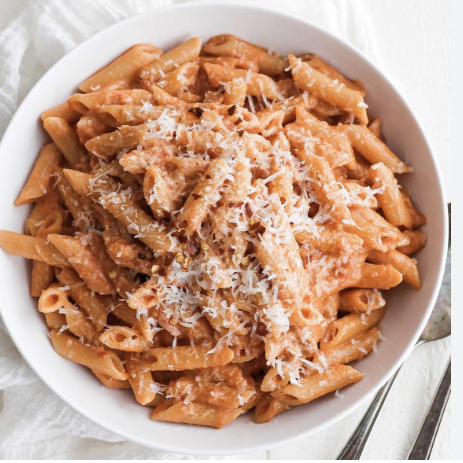

Pasta Ala Vodka
Ingredients
- Pasta
- Neutral Oil
- Chopped Garlic
- Tomatoe Paste
- Heavy Creame
- Oregano
- Salt
- Pepper
- Chilli Flakes
- Parmesan
- Bread Crumbs *optional*
Instructions
- Bring a pot of salted water to a boil. Add in pasta and stir occasionally
- While pasta is cooking, begin on the sauce:
- In a large pan on low heat, add oil and cook chopped garlic
- Add in tomatoe paste and cook until paste appears to be darker in color
- Slowly pour in heavy creame and stir until tomatoe past is combined
- Season with oregano, salt, pepper, and chilli flakes
- Add in parmesan and mix
- Once pasta is cooked to al dente, add the pasta to the pan. Make sure that it is on low-medium heat
- Slowly mix the pasta, and gradually increase the heat
- Serve and heat hot. Top with bread crumbs and extra parmesan if wanted
- Enjoy!

Back